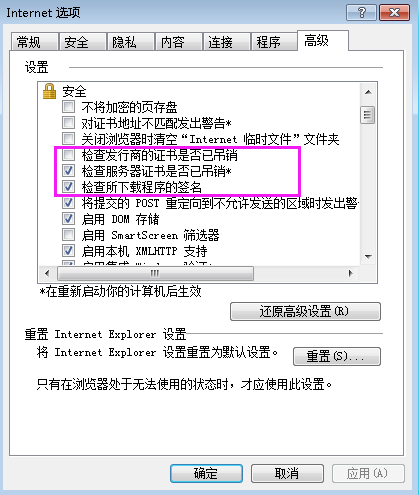
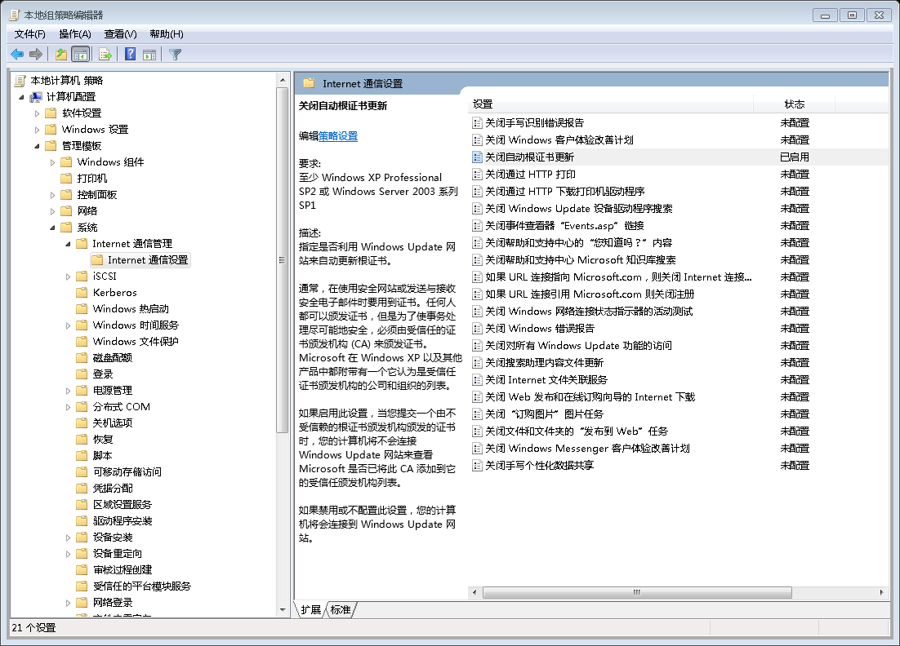
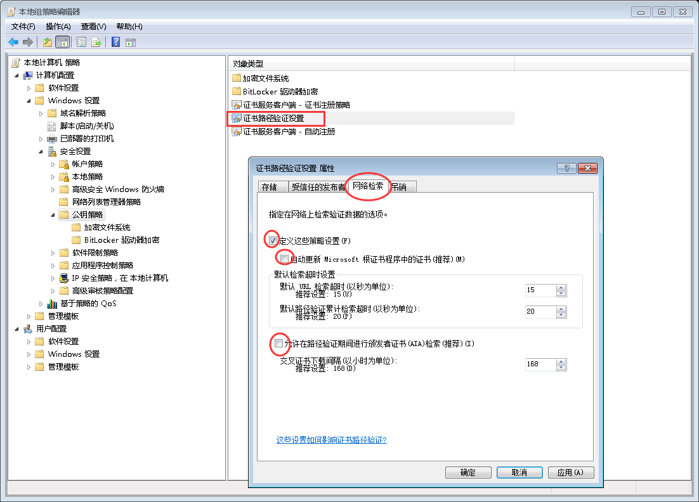

解决内网Windows系统访问Https缓慢问题
文章目录
简述
客户反应使用我们的系统访问网页很慢，我们的系统有基于IE和Chromium内核两套逻辑，但结果都是很慢。
具体问题可以转换为这样，一台内网的Windows，无论使用什么浏览器，访问Http速度一切正常。但访问Https就有问题了，Firefox访问很快，除Firefox外其它浏览器如IE或者Chrome第一次访问Https网址总是很慢，但只要过了第一次后再访问各种Https网址都很正常。这个问题弄了我很久才解决。这里记录下我都折腾了什么。
过程
首先我们系统默认是IE内核的，IE访问Https这个问题我以前遇到过，解决方法是把IE下图的三项检测去掉

可惜这次不奏效，还是很慢。中间还上网搜过说是代理的问题，我压根没弄代理。我还想过是dns解析的问题，测试发现dns很快。 我还想过是系统问题，重装系统依然如故。
到这里，虽然已经把那些检查全去掉，但我隐隐还是怀疑Windows系统在访问Https时访问了什么和证书相关的东西导致慢。直接上Wireshark查，果然在获取到网站证书后，系统会去尝试访问 ctldl.windowsupdate.com 导致卡顿，找到关键信息就好办直接上网找解决方法就好。
解决方法
有两种改配置的方法：
一个是打开 gpedit.msc，在计算机配置 -> 管理模板 -> 系统 -> Internet通信管理 -> Internet通信配置把关闭自动根证书更新 开启

一个是打开 gpedit.msc，在 计算机配置 -> Windows设置 -> 安全设置 -> 公钥策略 -> 证书路径验证设置中，选择网络检索子菜单，然后按下图进行配置

文章作者 hao
上次更新 2021-08-15